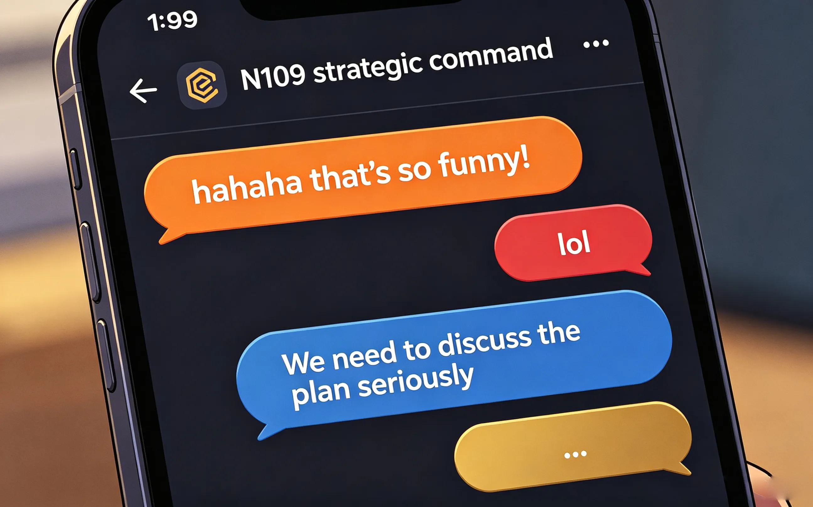
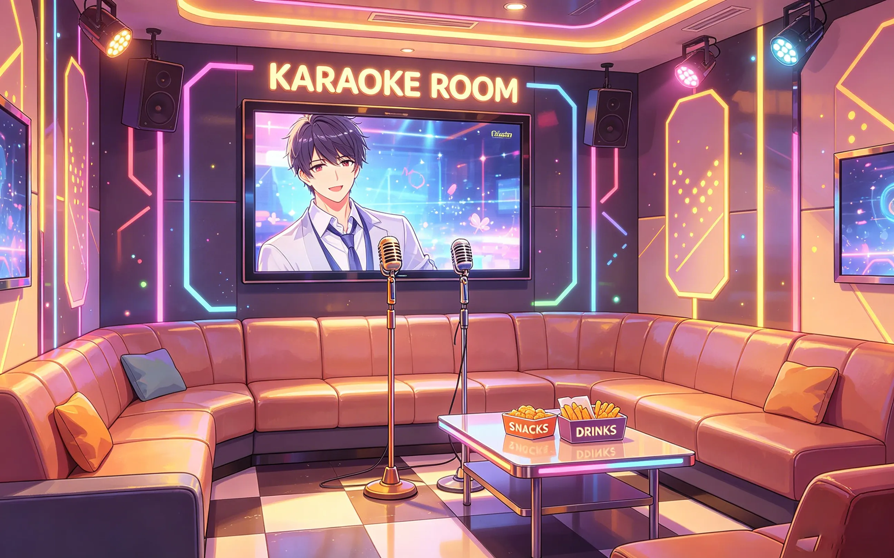
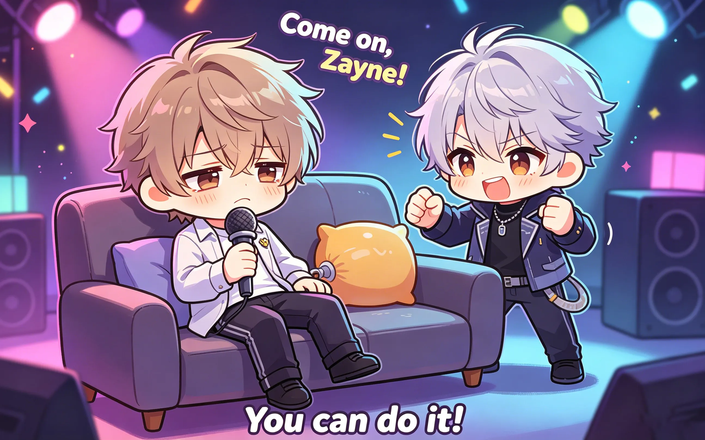
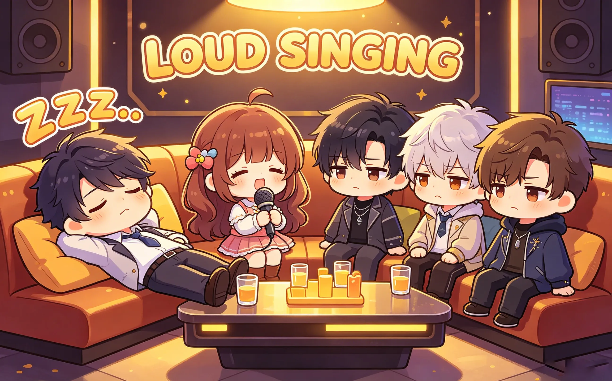
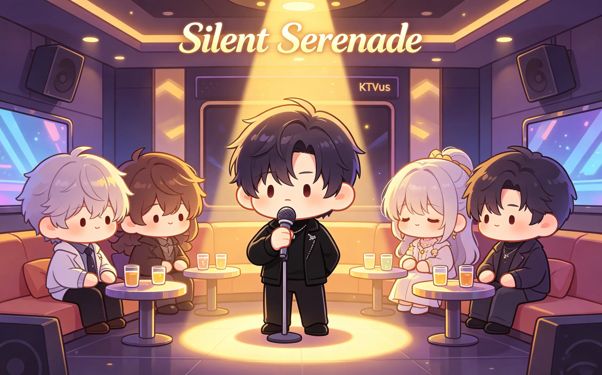
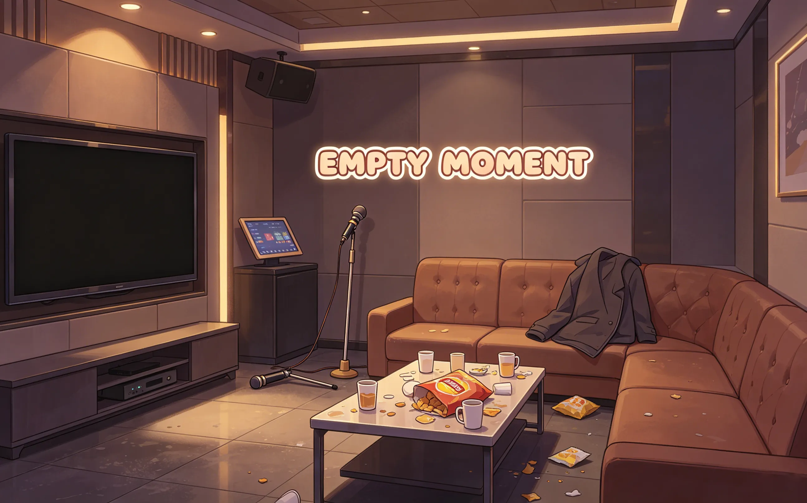

or: four men, one ktv room, zero vocal training
it started, as most disasters do, with rafayel.
"we should go to karaoke," he said.
no one asked why. but everyone regretted it.
this is what happened next.

rafayel arrived first. he had been practicing for three days.
sylus arrived second. black coat. black sunglasses. indoors. at night.
"you're wearing sunglasses," said rafayel.
"ambiance."
"it's karaoke."
"ambiance."
zayne arrived third. he was carrying a small bag.
"what's in the bag," asked rafayel.
"earplugs. hand sanitizer. throat lozenges."
"why do you need throat lozenges?"
"in case someone sings badly and i need to preserve my hearing."
xavier arrived fourth. twenty minutes late. he had fallen asleep in the car again.
"sorry," he said. "the seat was warm."
"you weren't driving," said rafayel.
"i know. the back seat."
silence.
"let's go," said rafayel.
and they went.

the room was small. leather couch. flashing lights. two microphones.
sylus sat in the corner. arms crossed. watching.
zayne sat next to him. already putting in earplugs.
xavier lay down on the couch. closed his eyes.
"xavier, you can't sleep here," said rafayel.
"the couch is comfortable."
"we're here to sing."
"you're here to sing. i'm here to supervise."
rafayel picked up the microphone. tapped it. feedback screeched.
zayne winced. sylus didn't move. xavier didn't wake up.
"testing, testing," said rafayel.
"we can hear you," said zayne.
"i'm warming up."
"you've been warming up for three days."
rafayel ignored him. scrolled through the song list.
rafayel chose a power ballad. dramatic. emotional. too high for his range.
he sang with conviction. closed his eyes. felt the music.
the notes were... ambitious.
zayne put in his second earplug.
sylus watched. expressionless.
xavier slept peacefully.
rafayel hit the high note. cracked. kept going. cracked again.
he finished with a flourish. opened his eyes. looked around.
"so?"
silence.
"that was..." zayne paused. "enthusiastic."
"enthusiastic?"
"very loud."
"i'll take it."
sylus said nothing. rafayel took that as approval.
he picked up the second microphone. "duet?"
sylus stared at him.
"no."

rafayel handed zayne the microphone. zayne held it like it might explode.
"i don't sing."
"everyone sings at karaoke."
"i'm a doctor."
"doctors can sing."
zayne sighed. scrolled through the song list. chose a medical education song from the 1980s.
"is that about the circulatory system," asked sylus.
"yes."
"why."
"it's the only one i know."
he sang. it was accurate. medically accurate. rhythmically questionable.
rafayel stared in disbelief.
"are you... teaching us anatomy?"
"the song is educational."
"we're at karaoke."
"education never stops."
sylus, for the first time, almost smiled.

it was sylus's turn. he refused.
rafayel insisted. sylus stared. rafayel gave up.
xavier was still asleep.
"wake him up," said rafayel.
zayne shook xavier's shoulder. xavier didn't move.
"he's out," said zayne.
"how is he sleeping through this?"
"he's xavier."
as if on cue, xavier opened his eyes. sat up. picked up the microphone.
"i know a song," he said.
everyone stared.
he sang. it was a lullaby. soft. slow. melodic.
his voice was unexpectedly gentle.
rafayel's jaw dropped.
"you can sing?"
xavier finished. put down the microphone. lay back down.
"i used to sing to the stars," he mumbled. "they didn't complain."
then he was asleep again.

rafayel kept pushing. "you promised."
"i said i would come. i didn't say i would sing."
"that's implied."
"it's not."
they stared at each other. rafayel didn't blink.
sylus took the microphone.
he didn't choose a song. he didn't look at the screen.
he just started singing.
it was low. deep. rough around the edges.
not technically good. but... haunting.
the room went quiet. even xavier opened his eyes.
he sang about a lost city. about waiting. about someone who never came back.
when he finished, no one spoke.
rafayel opened his mouth. closed it. opened it again.
"that was..."
"don't."
"i was going to say—"
"don't."
sylus put down the microphone. sat back in his corner. crossed his arms.
no one mentioned it again.
but they all remembered.

they left at midnight. rafayel's voice was gone. zayne's ears were ringing. xavier was still tired. sylus looked like nothing had happened.
"that was fun," said rafayel. his voice cracked.
"you can't speak," said zayne.
"worth it."
xavier yawned. "the lullaby was the best part."
"you were asleep," said rafayel.
"i heard it in my dreams."
sylus walked ahead. hands in pockets. not looking back.
but he was listening.
he always listened.